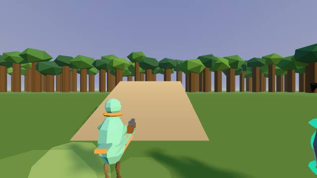
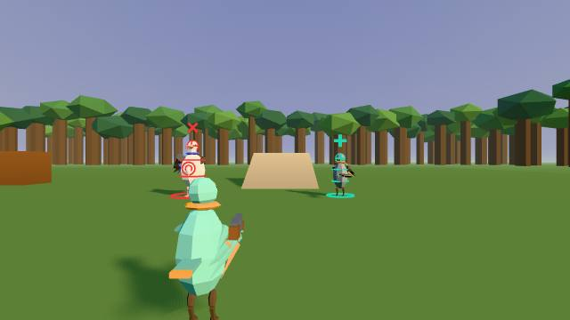
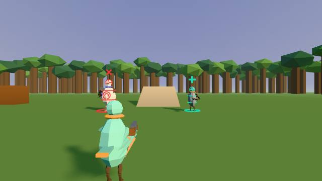

Hummingbird Playable
Mobility skirmisher · Playable since Stage 4
Appearance: the smallest hero. Needle bill as long as its body; wings shown as two translucent blurred discs either side; legs tucked, it always hovers 0.3 m off the ground. Iridescent green, ruby throat. Reads as "tiny dot with a needle and two shimmering discs".
How to play
Skirmishers live on movement. Dash in, trade a few shots or hits, and dash out. Use the lanes' Updrafts and rooftops to keep the initiative.
Hummingbird fights with the Nectar Needler, which hits instantly. Damage drops off between 12 m and 28 m, and head hits are beak shots worth ×1.65. Every level above 1 is a Molt: +28 max HP per level; +3% gun damage of base per level; +1 Song power per level; +3 melee damage per level.
Abilities
Four abilities. Slots 1 to 3 unlock at level 1, the ultimate at level 6. Each can be upgraded three times, for 1, 2, 5 AP, in order; see Ability Points. The shortest cooldown in the kit is Dart at 7 s.

1. Dart
Dash 8 m in 0.15 s along your aim, including straight up. Three charges.
- Tier 1 · 1 AP+1 charge (4 charges) +1 charge
- Tier 2 · 2 AP-2 s cooldown cooldown -2 s
- Tier 3 · 5 APYour next gun shot within 1 s of a Dart deals +60% damage
2. Nectar Sip
Tether to an enemy hero within 6 m for 2 s (it breaks beyond 12 m): the target takes 40 + 0.4 x SP Song damage a second and you heal the same amount.
- Tier 1 · 1 AP+1 s duration (3 s) duration +1
- Tier 2 · 2 AP+4 m range and break distance (10 m, breaks at 16 m) range +4 m
- Tier 3 · 5 APThe target is also slowed 30%

3. Blur
For 2 s you move 40% faster and have +40% Talon resist.
- Tier 1 · 1 AP+1 s duration (3 s) duration +1
- Tier 2 · 2 APAlso +40% Song resist
- Tier 3 · 5 AP-5 s cooldown cooldown -5 s

4. Thousand Beats
For 5 s your wings are blades: every Dart damages enemies along its path for 100 + 0.9 x SP Song damage, Dart has 2 more charges (and they are filled now), and a Dart that hits a hero refunds a charge.
- Tier 1 · 1 AP+2 s duration (7 s) duration +2
- Tier 2 · 2 AP+40 damage (140 + 0.9 x SP) damage +40
- Tier 3 · 5 APDart hits also silence for 0.75 s silence +0.75
Since Stage 4. See all heroes.